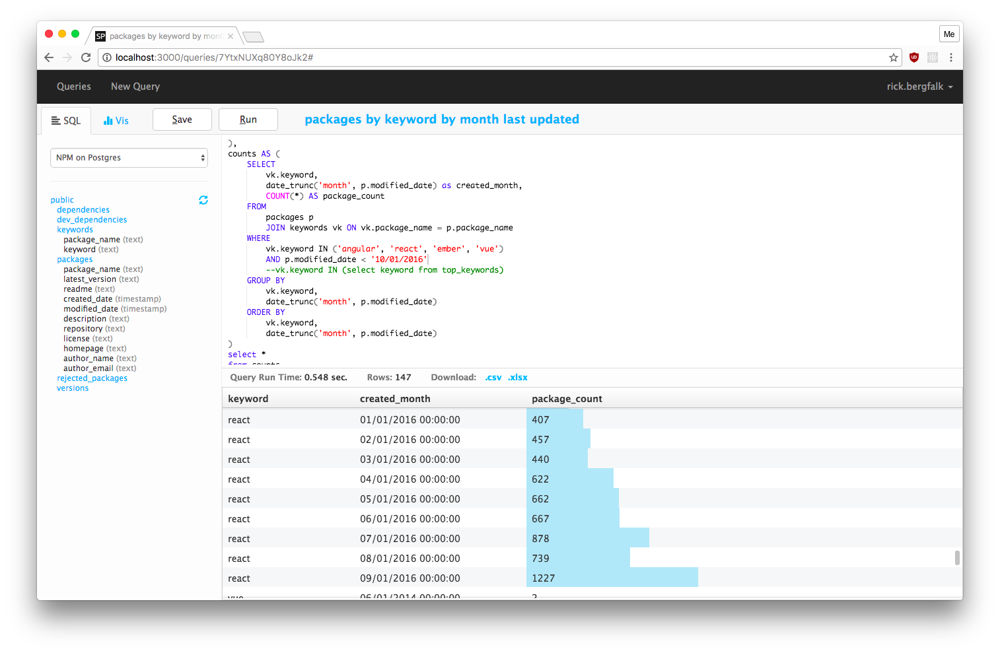

SQLPad
Run SQL in your browser...

... and chart the results.

Supports Postgres, MySQL, SQL Server,
Vertica, Crate, and Presto.
About
SQLPad is a self-hosted web app for writing and running SQL queries and visualizing the results. Its goal is to be a simple tool for exploratory data work and visualizations, ideal for data analysts who would prefer to work in SQL.
SQLPad is meant to be run on an internal network for a single team. All connections added to the app can be used by all individuals with access to the SQLPad server. All queries written can be run and edited by everyone on the server.
If you want to be bold and daring, you can expose your SQLPad instance to the outside world. Please make sure you fully understand the risks associated with doing this and use HTTPS.


Installation
Installing SQLPad is as simple as installing Node.js
and running npm install sqlpad -g at a command prompt.
For more details on installing and running a SQLPad instance, see the Installation and Administration page.
Limitations
Be sure not to query with 2 columns returned of the same name. Some SQL reporting systems can handle this. SQLPad can't.
Every query is run with a new session/connection, so keep that in mind if you use variables and temp tables and split up your SQL executions. If this doesn't make any sense to you just forget you read this you probably won't be impacted by it.

{kind=link}